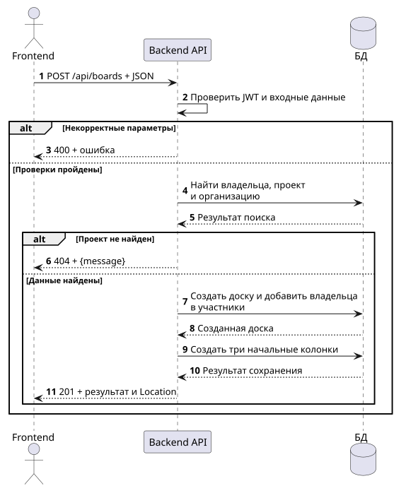

Создает доску проекта с тремя начальными колонками.
Доступ: JWT.
Используется в UC-2. Создание доски.
Схема работы


Алгоритм
Проверить JWT и входные данные. Название доски должно быть непустым и содержать не более 100 символов. Удалить пробелы по краям.
Найти текущего пользователя. Если указан
projectId, проверить условиеprojectId > 0и существование проекта. Организацию определить по проекту. Если проект не указан, выбрать первую организацию пользователя поJoinedAt.Создать доску, назначив текущего пользователя владельцем и участником.
Создать три начальные колонки:
To Do,In Progress,Doneс порядковыми номерами0,1,2. КолонкуDoneотметить как завершающую.Вернуть результат создания с кодом
201и заголовкомLocation, содержащим адрес получения доски.
Входные параметры
Тело запроса (BODY, JSON).
Поле | Тип | Обязательно | Описание и ограничения |
|---|---|---|---|
| string | Да | Непустое название доски, не более 100 символов |
| integer, nullable | Нет | Идентификатор проекта, при указании должен быть |
В текущем интерфейсе projectId передается из активного проекта.
Ответ
201 Created: возвращает объект со сведениями о созданной доске.
Поле | Тип | Описание |
|---|---|---|
| integer | Идентификатор созданной доски |
| string | Название доски |
| integer, nullable | Идентификатор связанного проекта |
Ошибки
Код | Причина | Ответ |
|---|---|---|
400 | Некорректное название или другие ошибки валидации | Ошибка валидации |
400 | Идентификатор проекта | Ошибка запроса |
400 | У пользователя отсутствует организация при создании доски без проекта | Ошибка запроса |
404 | Указанный проект не найден |
|
Пример запроса
POST /api/boards
Content-Type: application/json
{
"name": "Работы проекта",
"projectId": 1
}